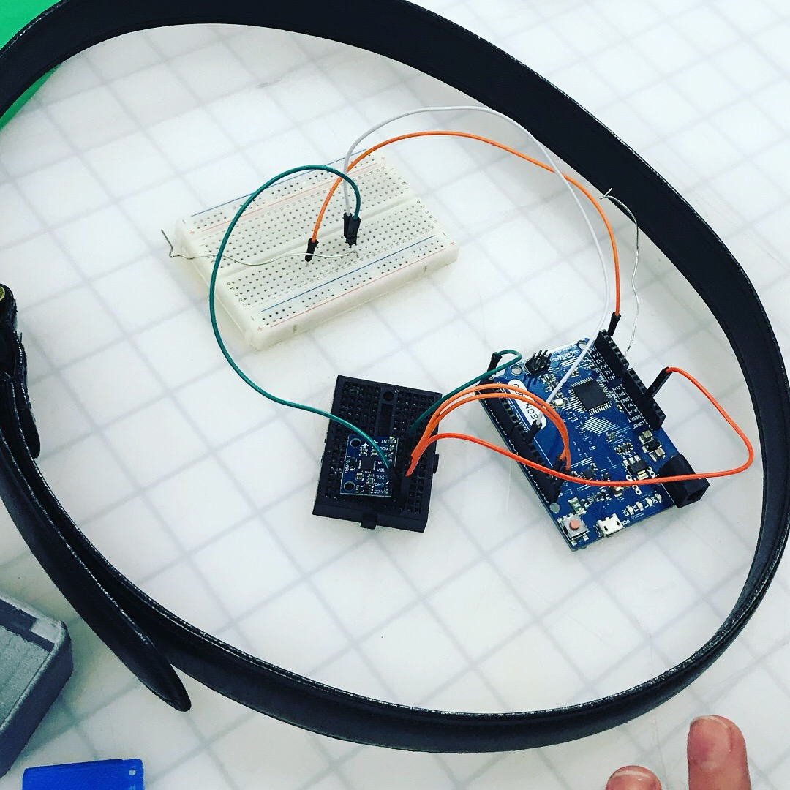

Function
The goal of the Stria band is to provide a safe walk home for all blind people who face problems daily with veering. Veering is when an individual is unable to walk in a straight path, and “veers” off from their original direction. This causes life threatening incidents every single day. Our solution is to provide feedback to let users know when they are veering unintentionally. This will be especially helpful in loud and busy public areas where relying on sound for navigation is not an option.
Development
Stria has been developed as a result of many different prototypes, intense research and hands-on needfinding with blind users, and hundreds of hours of perfecting our product. Our process began with a single user, James Uharriet, who was blinded a couple years ago in a car crash. Through interviews with Jimmy, his family, and his trainers, we were able to develop several possible prototypes. After expanding our research base to surveying through blind centers across the country, primarily Vista Center and Lighthouse Center in the Bay Area, we have created a product that is simple, powerful, and effective.
